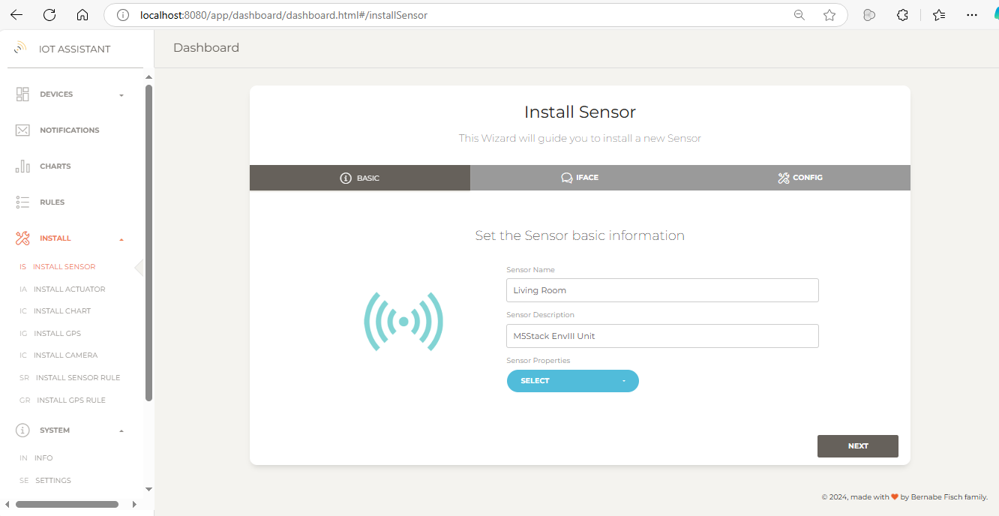
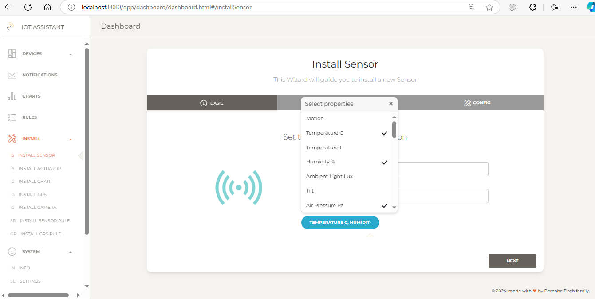
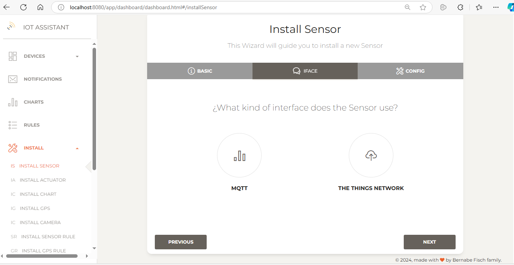
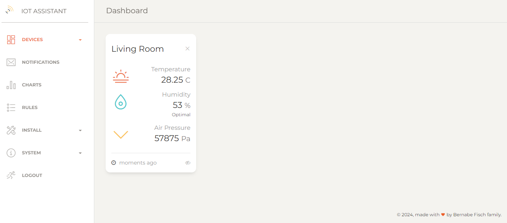
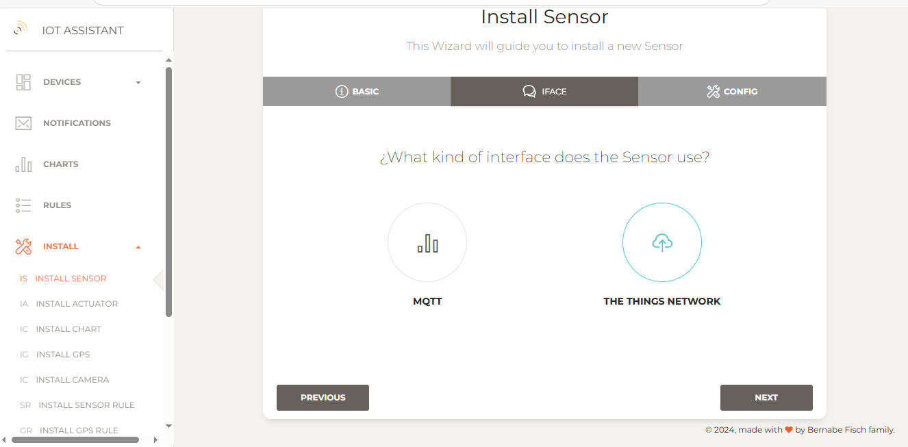
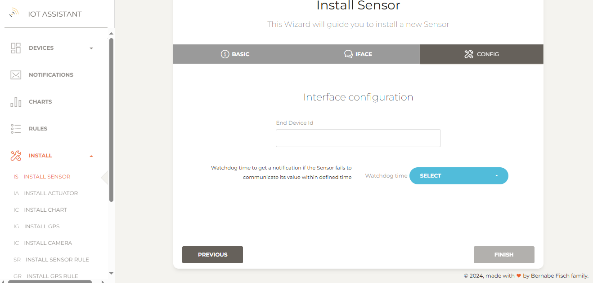
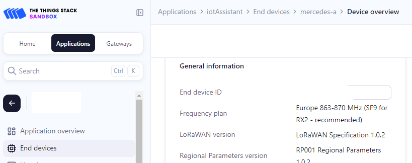

Managing sensors
Installing a MQTT sensor
To install a MQTT sensor go to Install > Install sensor in the left navigation bar to open the setup wizard.
1 - Enter a name and description for the new sensor
{kind=link}
2 -Select the sensor properties (e.g. Temperature °C, Humidity %, Air Pressure Pa), then click Next
 3 - Select an interface. For an MQTT sensor, choose MQTT and click Next. {kind=link}
{kind=link}
4 - In the next step, confirm the settings provided. Optionally, set a watchdog interval to receive notifications if the sensor fails to communicate its value within a specified time.
{kind=link}
5 - Finally, click Finish to proceed. If everything is set up correctly, you'll be redirected to the sensors page, where the installed sensors are listed.
On this page, sensor values are shown as Unknown if no value has been published yet. Otherwise, the last published value and its date are displayed. From here, you can also disable the watchdog or delete the sensor.
{kind=link}
The MQTT sensor
The MQTT sensor should publish values to the same broker that IoT Assistant is connected to (see this guide for broker configuration).
Topic
Sensor values should be published to sensor/{sensor name} with {sensor name} matching the name given during installation. For example, a sensor named "Living room" would use the topic:
sensor/Living room
JSON
The message published by the sensor should be a JSON string containing all sensor properties we selected during its installation with their current values.
Each value shoud be either a float (e.g "33.47") or a boolean ("true" or "false") depending on the property's type.
For the sensor we installed above a valid JSON message would look like this:
{"Temperature C" : "28.25", "Humidity %" : "53", "Air Pressure Pa": "57875"}
Boolean properties can be identified during installation, as they do not include a unit in their name. For a sensor with a boolean property, a valid JSON example might be:
{"Temperature C" : "33", "Motion" : "true"}
Arduino code
ExamplesInstalling The Things Network sensor
To install a sensor connected to The Things Network, follow the same steps as for MQTT, but select The Things Network as the interface instead of MQTT and click Next.
{kind=link}
Then, provide the End Device ID, which is the ID used when the sensor was set up on The Things Network platform.
 {kind=link}
{kind=link}
The Things network sensor
Payload
A Things Network sensor should publish a binary payload in this format for IoT Assistant to understand:
<propertyId><floatValue|booleanValue><propertyId><floatValue|booleanValue>...
Each propertyId (1 byte) is followed by a value, which can be a float (4 bytes in IEEE-754 format) or a boolean (1 byte, where 0 = false, 1 = true). You can check property IDs here.
For a sensor with properties Temperature C and Motion, a valid payload would look like this:
00000010010000011100100000000000000000000000000100000001
00000010 : Temperature C Id
01000001110010000000000000000000 : 25 (IEEE-754 format)
00000001 : Motion Id
00000001 : True
The binary payload above is 7 Bytes. Its hex representation is 241C800000101